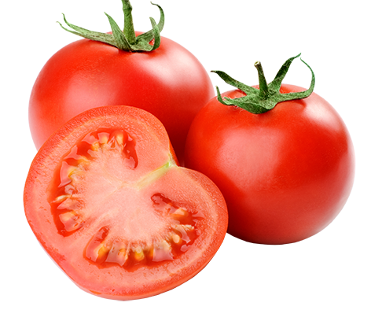

Me gustan las plantas y crecer variedades exoticas.
Poder decir adios es crecer
Te invito a que visites mi Blog
| Tipos de Tomates | |||
| Variedad | Descripción | Imagen | Usos |
| Tomate Roma | Tomate ovalado y firme. |  | Perfecto para hacer salsas y conservas. |
| Tomate Cherry | Chico y dulce. |  |
Usado en ensaladas o como snack. |
| Tomate Beefsteak | Grande y jugoso, con mucho sabor. | Ideal para hamburguesas y sandwiches. | |
| Tomate Verde | Fresco y sutil. | Se usa en salsas y guisos. | |
| Tomate San Marzano | Variedad italiana | Excelente para hacer salsa de tomate y pasta. | |